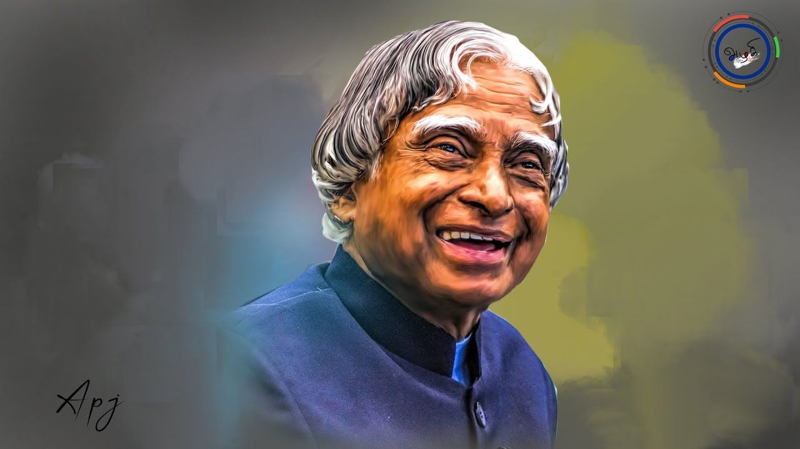

Dr. APJ Abdul Kalam
The Missile Man of India

Dr. APJ Abdul Kalam , Great Indian scientist and
politician who played a leading role in the development of India’s
missile and nuclear weapons programs
Here's a time line of Dr. Kalam's life :
- 1931 - A.P.J. Abdul Kalam, in full Avul Pakir Jainulabdeen Abdul Kalam, was born on October 15, 1931 , in Rameswaram, Tamil Nadu, India.
- 1958 - Kalam earned a degree in aeronautical engineering from the Madras Institute of Technology and also joined the Defence Research and Development Organisation (DRDO) .
- 1969 - He moved to the Indian Space Research Organisation (ISRO), where he was project director of the SLV-III, the first satellite launch vehicle that was both designed and produced in India.
- 1981 - The Government of India honoured him with the Padma Bhushan.
- 1982 - Kalam planned the program that produced a number of successful missiles, which helped earn him the nickname “Missile Man.”
- 1989 - India’s first intermediate-range ballistic missile, which incorporated aspects of the SLV-III and was launched in 1989.
- 1990 - The Government of India honoured him with the Padma Vibhushan .
- 1997 - Kalam received India's highest civilian honour, The Bharat Ratna, for his contribution to the scientific research and modernisation of defence technology in India.
- 1998 - His prominent role in the country’s nuclear weapons tests solidified India as a nuclear power and established Kalam as a national hero.
- 2002 - He served as the 11th President of India from 2002 to 2007.
- 2013 - He was the recipient of the Von Braun Award from the National Space Society "to recognize excellence in the management and leadership of a space-related project"
- 2015 - While delivering a lecture at the Indian Institute of Management Shillong, Kalam collapsed and died from an apparent cardiac arrest on 27 July 2015, aged 83 .
"Dream is not that which you see while sleeping, It is something that does not let your sleep"
-- Dr. APJ Abdul Kalam